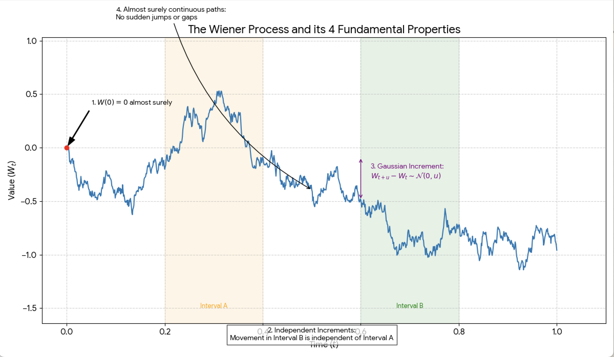
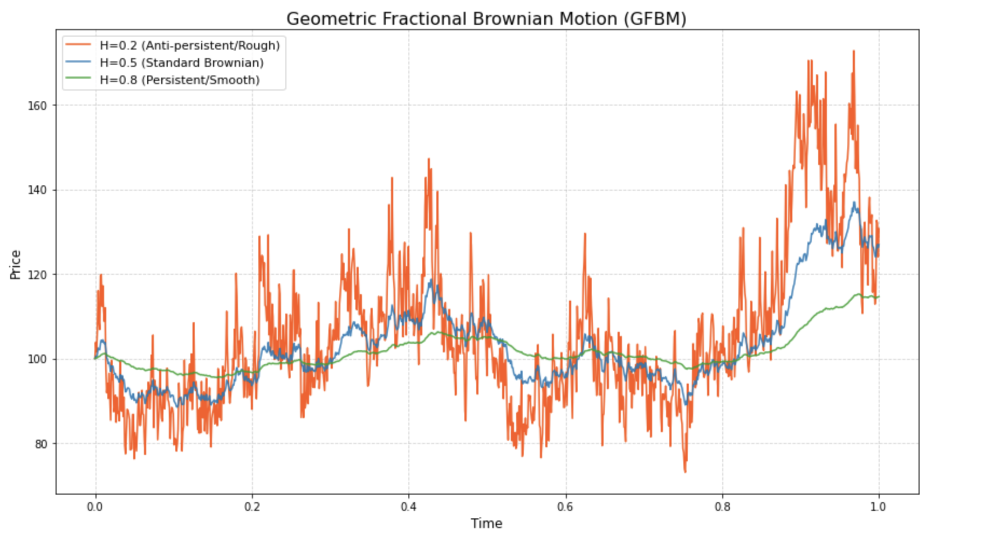

Introduction
Geometric Brownian Motion (GBM) is a mathematical framework that is used for modelling the price of stock prices. Originally derived from observations in nature, GBM uses a physical understanding of randomised motion to account for fluctuations in price. This project explores how the discovery of Brownian motion has led to our current usable model for financial modelling.Backround and Histroy
As early as c. 60 BC, humans had at least commented on the erratic behaviour of particles within a fluid. In his poem De Rerum Natura (’On the Nature of Things’), Lucretius describes dust particles illuminated by a setting sun. This is likely the first recorded observation of the stochastic process that applies modern financial systems. Although what Lucretius saw was likely caused not by true Brownian motion but by air currents, he at least "perfectly describes and explains the Brownian movement by a wrong example". Crucially, Lucretius concludes that microscopic collisions cause general macroscopic motion. This forms the basis for stochastic analysis. Mathematically, Lucretius’ observations mirror (at least in a logical sense) a discrete random walks, where the position $\boldsymbol X_n$ after $n$ steps is defined by $$X_n = \sum_{i=1}^n Z_i$$ where $Z_i$ represents the Lucretius' 'invisible' collisions. Formally we now call $Z_i$ stochastic increments. Note that $n \in \mathbb N$. The next known observation of stochastic motion arrives from the Dutch Physicist Jans Igenhousz. He notes the irregular movement of finely powdered charcoal suspended in alcohol. Some historians claim this as the first experimental discovery of what Brown has been accredited for. However, our analysis of primary sources reveals this is likely not the case. Strict Brownian motion requires a state of thermal equilibrium, yet in Ingenhousz’s analysis, the use of uncovered alcohol created rapid evaporation. Instead, convection currents drove what Igenhousz saw. Notably, the charcoal particles he observed where roughly $100 \mu m $. Our calculations justify why this indicates he was not the first to discover Brownian motion. The \textbf{Stokes-Einstein Equation} shows that the diffusion coefficient $D$, which measures the strength of random 'jiggling', is inversely proportional to the particle's radius $a$, \begin{equation} D = \frac{k_B T}{6 \pi \eta a} \end{equation} To explain why Ingenhousz's observation of $100 \mu m$ charcoal particles (where $a = 50 \mu m$) fails the criteria for Brownian motion, we calculate the root mean square (RMS) displacement $\Delta x$ over a time interval $t$: \begin{equation} \sqrt{\langle \Delta x^2 \rangle} = \sqrt{2Dt} \end{equation} Using the viscosity of ethanol ($\eta \approx 1.2 \times 10^{-3} \, \text{Pa}\cdot\text{s}$) at room temperature ($T \approx 293 \, \text{K}$), the diffusion coefficient for a particle of this size is approximately $D \approx 3.5 \times 10^{-15} \, \text{m}^2/\text{s}$. For an observation period of $t = 1 \, \text{s}$, the displacement is: \begin{equation} \Delta x \approx \sqrt{2(3.5 \times 10^{-15})(1)} \approx 8.4 \times 10^{-8} \, \text{m} = 0.084 \mu m \end{equation} Because the displacement ($0.084 \mu m$) is less than $0.1\%$ of the particle's diameter ($100 \mu m$), the motion would be imperceptible under the microscopes of 1784. Therfore, the "violent" motion Ingenhousz saw was not stochastic diffusion, but likely convection caused by evaporation. In financial terms, this is the equivalent of a "high-beta" environment where the volatility of a single stock is completely drowned out by a massive market-wide trend. The underlying stochasticity exists, but the Péclet-like ratio of the market indicates that the systemic drift $\mu$ has overwhelmed the idiosyncratic diffusion $\sigma$.Brownian Motion
However, Brownian motion showed no uses to the financial industry until mathematician Norbert Wiener defined the Wiener process in 1918. Wiener defined a way to calculate the probability of a particle taking a specific set of paths - this is known as the Wiener process.

The above illustration demonstrates the random paths that particles take in Brownian motion. The Wiener process provides a mathematical way to 'track' the path of one particle and therefore predicts the final position of the particle.
Although physically Brownian motion represents the motion of a particle, the Wiener process generalises the idea of a particle to just represent some variable, \( W \). This variable can adopt a range of meanings, including representing the stock price in financial modelling.
The Wiener process is characterised by the following properties:
-
\( W(0) = 0 \) almost surely.
- This means that the initial value of our variable \( W \) (in this case the price of the stock) starts from a value of 0.
-
\( W \) has independent increments: for every \( t > 0 \):
- \( W_{t+u} - W_t,\; u \ge 0, \) are independent of the past values \( W_s,\; s < t. \)
- \( W \) has Gaussian increments - a time step \( u \) results in an increment that is normally distributed with mean 0 and variance \( u \).
-
\( W \) has almost surely continuous paths: \( W_t \) is almost surely continuous in \( t \).
- i.e. \( W \) has no sudden jumps - it passes through all intermediate values to get from one point to another.
In the above conditions, "almost surely" is a probability term - this means that the probability of the condition being true is 100%.
The basic Wiener process can take negative values, which made it unsuitable for direct stock price modelling. Therefore the mathematical framework was adapted to create Geometric Brownian Motion (GBM), which allows price changes proportional to the current price.
In GBM, the stock price \( S_t \) typically follows the stochastic differential equation:
\[ dS_t = \mu S_t \, dt + \sigma S_t \, dW_t \]
This model ensures that asset prices have a natural lower bound of 0. However, it does allow the percentage change in price to become negative, i.e. the price is allowed to fall.
Although the GBM model provides a framework for mathematical modelling, it is most useful as a vehicle for the Black-Scholes Model. Geometric Brownian Motion by itself is excellent for modelling small-scale, random shocks, but is extremely poor at capturing extreme market jumps. This is due to the path in GBM being continuous, whereas real markets often exhibit sharp discontinuities. For example, the Geometric Brownian Motion model would not predict events such as the 2020 COVID-19 stock crash or the 2008 financial crash.
The general GBM model as described above exists in many modified forms including the Geometric Fractional Brownian Motion model (GFBM), the Subdiffusive GBM (sGBM) and the Mean-Reverting GBM. The GFBM model incorporates an additional parameter called the Hurst parameter \( H \), which varies between 0 and 1. Standard GBM has \( H = 0.5 \).
If \( H > 0.5 \), the process being modelled has long-range dependence which means there is positive correlation between future and past increments. For example, a rise in stock price is likely to be followed by another rise. If \( H < 0.5 \), it indicates that the process tends to return to a long-range average.
The above graph illustrates that higher Hurst parameter values lead to smoother walks, illustrating that a low Hurst value is an indication of a volatile market.
SDEs
Stochastic Differential Equations
Stochastic differential equations represent a very powerful mathematical framework for modelling systems, and it is influenced both by deterministic forces and random fluctuations.
In physics and finance, we understand many quantities evolve over time, from particle positions, to temperature distributions and stock prices. When the future of this evolution is perfectly predictable from initial conditions, we can use ordinary differential equations (ODEs).
A simple example is exponential growth, \[ \frac{dx}{dt} = kx, \] which tells us exactly what \( x(t) \) will be at any moment in time given the initial value and growth constant \( k \).
However, this deterministic framework breaks down when confronted with the reality of financial markets. Markets are not clockwork mechanisms. They are influenced by an endless stream of unpredictable factors: economic news releases, geopolitical events, shifts in investor sentiment, regulatory changes, and countless individual trading decisions.
Each of these introduces its own small element of randomness that cannot be captured by deterministic equations alone. To model these systems realistically, we need to use a mathematical tool that can incorporate both the underlying trends and the inherent uncertainty, and this is where stochastic differential equations enter the picture.
The Structure of Stochastic Differential Equations
A stochastic differential equation combines two fundamentally different components, a deterministic part which represents what would happen on average, and a stochastic part capturing unpredictable fluctuations. The general form of an SDE can be written as
\[ dX = a(X,t)\,dt + b(X,t)\,dW \]
This deceptively simple equation is a lot more sophisticated than it may look. The term \( a(X,t) \) is called the drift coefficient. It represents the deterministic tendency of the system, essentially the direction and rate at which \( X \) would evolve in the absence of any random perturbations. In a financial context, this might represent the expected return on an asset. The drift can depend on both the current state \( X \) and time \( t \), allowing for complex, path-dependent behaviour.
The term \( b(X,t) \) is the diffusion coefficient, sometimes called the volatility function. It determines the magnitude of random fluctuations, essentially how much the system can be knocked around by random forces. Crucially, this can also depend on the current state, meaning that uncertainty itself can be state-dependent. In financial markets, we often observe that volatility increases during periods of market stress; for example, an asset that has fallen sharply would likely exhibit greater price swings than one trading calmly.
The term \( dW \) represents an infinitesimal increment of Brownian motion, which we explored in the previous section. This is the source of all randomness in the equation.
Mathematically, \( dW \) behaves like \( \sqrt{dt} \) multiplied by a standard normal random variable \( Z \). This scaling is important, because it means that over longer time intervals, the random effects accumulate in a specific way, growing proportionally to the square root of time rather than linearly. This is fundamentally different from deterministic systems and reflects the diffusive nature of random processes.
One might wonder why we write \( dX \) rather than a traditional derivative like \[ \frac{dX}{dt}. \] This is because paths generated by SDEs are typically not differentiable in the classical sense. Brownian motion, despite being continuous, has such irregular, jagged paths that they have infinite variation, so you cannot compute a traditional derivative at any point.
The notation \( dX \) represents an infinitesimal change interpreted in a specific mathematical sense, either through Itô calculus or Stratonovich calculus (but those are far too complex for you to do at this stage), which provide rigorous foundations for manipulating these objects.
Geometric Brownian Motion: The Financial Standard
The basic Wiener process can take negative values, which made it unsuitable for direct stock price modelling. Stock prices, after all, cannot fall below zero; a company's value may plummet, but it cannot become negative. Therefore, the mathematical framework was adapted to create Geometric Brownian Motion (GBM), which ensures price changes are proportional to the current price level. The model is:
\[ dS = \mu S \, dt + \sigma S \, dW \]
Interactive Experiment: Drift vs Volatility (GBM)
This seemingly small modification, multiplying both drift and diffusion terms by \( S \), has some profound consequences. The parameter \( \mu \) represents the average growth rate or expected return of the asset. This is the deterministic trend component. If we removed all randomness (set \( \sigma = 0 \)), the solution would be simple exponential growth:
\[ S(t) = S_0 e^{\mu t} \]
The parameter \( \sigma \) represents the volatility, a measure of how severely and frequently the price fluctuates around its trend. Higher volatility means greater uncertainty and larger random swings.
In the GBM model, volatility is constant, though more sophisticated models relax this assumption. The key insight is that volatility is multiplicative, and it scales with the current price \( S \). This is realistic: a £100 stock experiencing 20% volatility will have absolute price swings ten times larger than a £10 stock with the same percentage volatility.
The multiplicative structure ensures that \( S \) remains strictly positive for all time, provided it starts positive. This is a mathematical guarantee that emerges from the properties of the exponential function.
Even if the random term \( dW \) pushes strongly negative in a particular instant, the proportional nature of the equation prevents the price from crossing zero. The percentage change in price can certainly be negative when the stock falls, but the price itself has a natural floor at zero.
FIGURE1????Solving Stochastic Differential Equations: The Euler-Maruyama Method
Although GBM does have an exact analytical solution, most SDEs encountered in practice do not. The drift and diffusion coefficients may be nonlinear functions of \( X \), or they could be time-dependent. In these cases, we must resort to using numerical methods. The most fundamental numerical method for SDEs is the Euler-Maruyama method.
The key idea here is that instead of trying to solve the equation all at once, we break time into tiny steps and solve it piece by piece. This is called discretisation. We divide the time interval \( [0, T] \) into \( N \) small steps of size \[ \Delta t = \frac{T}{N}. \] We then approximate the continuous SDE by a discrete-time recursion:
\[ X(t + \Delta t) = X(t) + a(X(t), t)\,\Delta t + b(X(t), t)\,\sqrt{\Delta t}\,Z. \]
Here, \( Z \) is a standard normal random variable, drawn independently at each time step. For Geometric Brownian Motion specifically, the Euler-Maruyama scheme becomes
\[ S(t + \Delta t) = S(t) + \mu S(t)\,\Delta t + \sigma S(t)\,\sqrt{\Delta t}\,Z. \]
The algorithm is straightforward. We begin with the initial condition \( S_0 \). At each time step, we draw a random number \( Z \) from a standard normal distribution. We then update the price using the formula above. We repeat this process for \( N \) steps until we reach the final time \( T \). The result is a single simulated path, with one possible trajectory that the stock price might follow given the model parameters.
Monte Carlo Simulation
A single simulated path doesn't tell us much. It only represents one possible future out of infinitely many. The true power of stochastic simulation comes from generating many paths and analysing their statistical properties. This is where Monte Carlo comes in.
The procedure is as follows, we run the Euler-Maruyama algorithm thousands or millions of times, each time with independently drawn random numbers. Each run produces a different trajectory \( S_1(t), S_2(t), \ldots, S_m(t) \). From this group of runs, we can compute the mean final price, the variance, percentiles for risk assessment, probabilities of extreme outcomes, etc.
For example, to estimate the probability that a stock price exceeds £150 after one year (given \( S_0 = 100 \), \( \mu = 0.08 \), and \( \sigma = 0.20 \)), we simulate 100,000 paths and count how many of these paths satisfy \( S(1) > 150 \). The fraction of paths meeting this criterion provides an estimate of the desired probability.
Monte Carlo methods are particularly valuable because they scale well to high-dimensional problems. For a portfolio of \( n \) correlated assets, we can simply simulate all processes simultaneously at each time step.
Physicists have used these same ideas for a while. Many Monte Carlo techniques were first developed in physics (particularly in the Manhattan Project) before being adopted by finance. The conceptual similarities between a particle undergoing molecular collisions and a stock price buffeted by market forces is remarkable.
figure 2????Simulation
GBM Simulator (Python in-browser)
Show Python code
Disaster Shock
Limitations and Extensions of Geometric Brownian Motion
Although the GBM model provides the foundation for the Black-Scholes option pricing formula, it has well-documented shortcomings when confronted with real market data. Geometric Brownian Motion is excellent for modelling small-scale, continuous random fluctuations, but it is fundamentally poor at capturing the extreme market movements that matter most for risk management.
The problem lies in the assumption of continuous paths. In GBM, prices evolve smoothly as an accumulation of many small steps, and there are no sudden jumps. However, real financial markets exhibit fat tails. Extreme events occur far more frequently than the normal distribution predicts.
The 1987 Black Monday crash, the 2008 financial crisis, and the March 2020 COVID-19 market crash all involved movements that GBM would assign probabilities of less than one in several million years.
Furthermore, GBM assumes constant volatility \( \sigma \), independent of price level or time. Typically, we know high volatility periods tend to be followed by more high volatility. Volatility also typically increases when markets fall, known as the leverage effect.
To address these limitations, researchers have developed more sophisticated models, but GBM remains a useful starting point for understanding market dynamics.